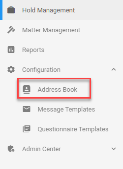
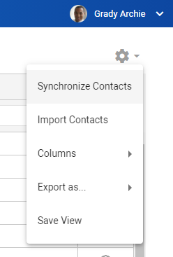

Note: Filtering/sorting works the same on all pages.
The Address Book represents all potential contacts of any hold. Contacts are often a combination of the company’s employee directory (usually provided by Azure Active Directory)
as well as any additional contacts that are manually entered or imported for people outside of the company.
Contacts become custodians when added to a hold.

View created contacts and filter/sort them via the columns.
|
|
Note: Filtering/sorting works the same on all pages. |
View a short animation of filtering and sorting on this page: Hold Management.
To add/remove columns, select the Settings icon 
Then, select Columns and (de)select the appropriate columns.
Select 
Define the Contact Details. Only the Full Name is mandatory.
Click Save.
Edit a contact via the View Contact Details icon
Delete one or more contacts by selecting them and clicking the Delete selected Contacts icon 
After edit or delete actions, update the Address Book View with the Refresh icon 
By synchronizing contacts with the company's employee directory, you will always work with an up-to-date list of potential custodians.
First, select the Settings icon
Then, select Synchronize Contacts.

For adding people outside the company (or more specifically outside the AAD of the tenant), use the Import option.
|
Select the Settings icon
Then, select Import Contacts and select the CSV file (address-book.csv) with contacts you want to import.
Export all your contacts as CSV, Excel or PDF.
Please note when you use this option to edit your contacts and import them back in, to export (and import back in again) as CSV.
Also, please be aware that edited email addresses will create a new record for that contact.
First, select the Settings icon
Then, select Export As... and select the format to which you want to export.
The Address Book View might have been adjusted by filtering, sorting and/or by a specific selection of columns (via Settings > Columns).
To save this new view, select the Settings icon
Then, select Save View.